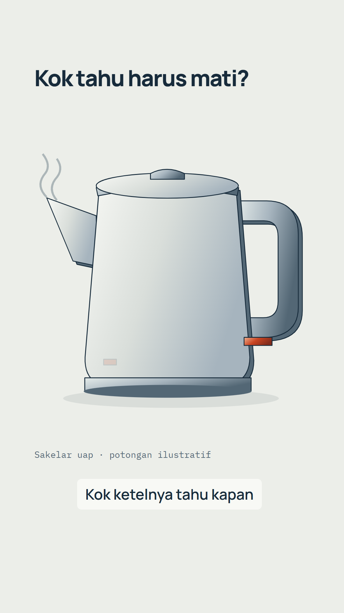
01: Kok tahu harus mati?
0.00–3.20s · measured
Airnya mendidih. Kok ketelnya tahu kapan harus mati?

Airnya mendidih. Kok ketelnya tahu kapan harus mati?
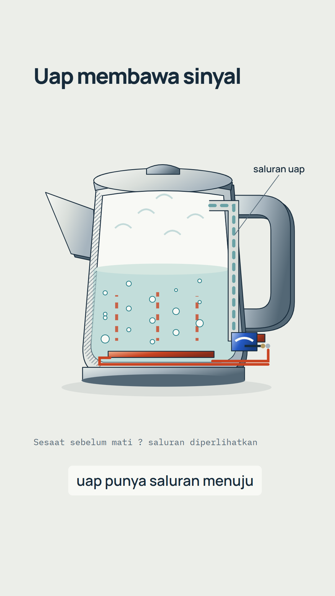
Pada ketel jenis ini, uap punya saluran menuju pemutus listrik. Kita ikuti jalurnya.
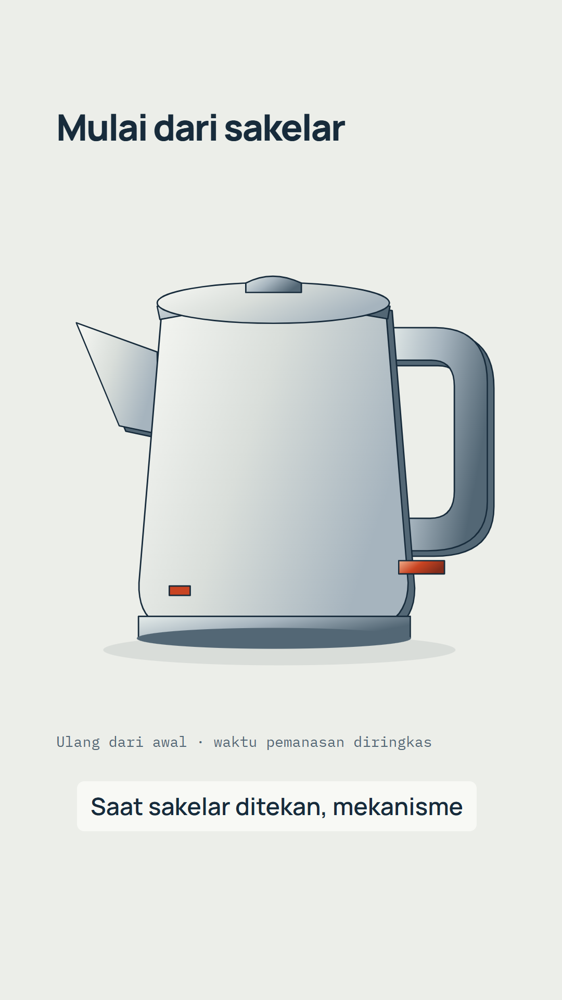
Kita ulang dari awal. Saat sakelar ditekan, mekanisme di dalamnya menutup kontak.
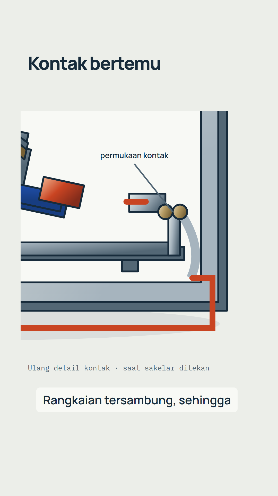
Dua kontak logam bertemu. Rangkaian tersambung, sehingga arus dapat mengalir ke elemen pemanas.
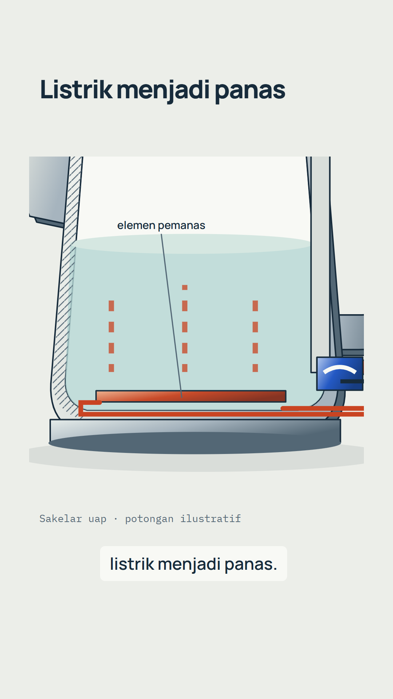
Hambatan elemen mengubah energi listrik menjadi panas. Panasnya diteruskan ke air di atasnya.
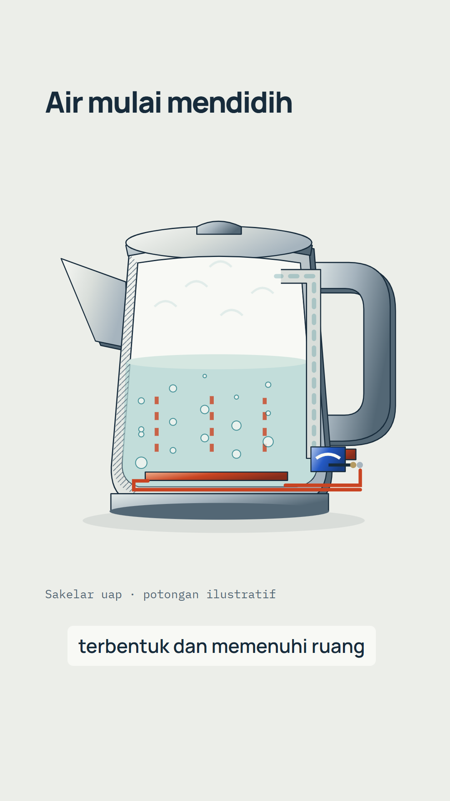
Saat air mendidih, uap terbentuk dan memenuhi ruang di bawah tutup.
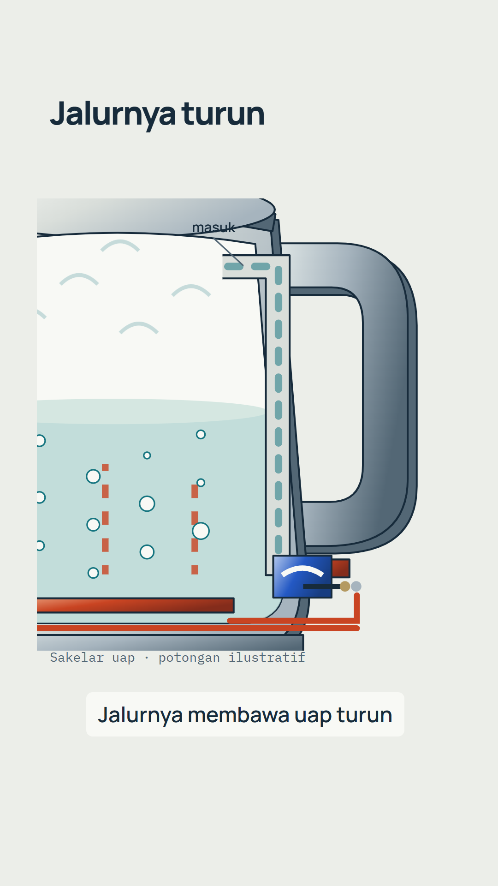
Sebagian uap masuk ke saluran khusus. Jalurnya membawa uap turun menuju unit pemutus.
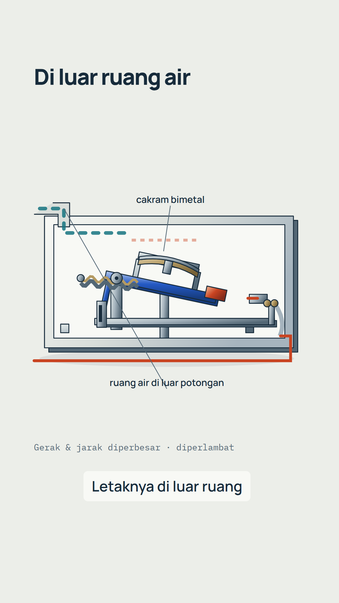
Di ujung saluran ada cakram peka panas. Letaknya di luar ruang air, bukan terendam.
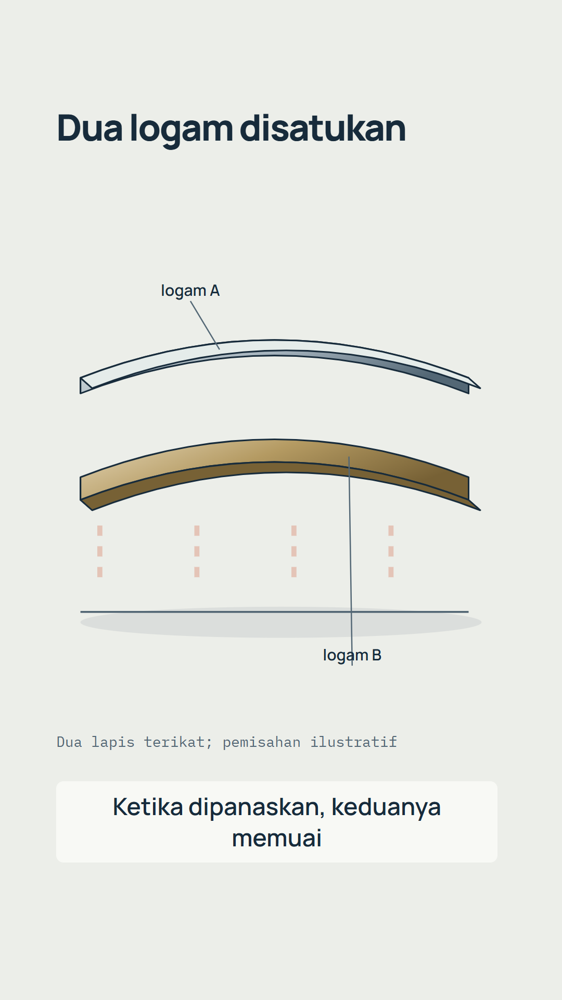
Cakram ini dibuat dari dua logam yang disatukan. Ketika dipanaskan, keduanya memuai dengan besaran berbeda.
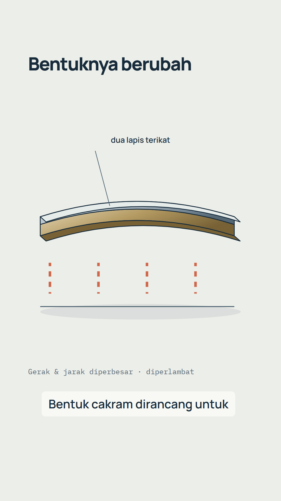
Karena terikat, perbedaan pemuaian mengubah kelengkungannya. Bentuk cakram dirancang untuk berpindah dengan gerakan sentak.
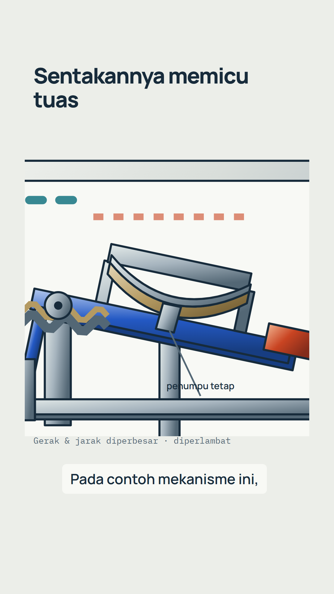
Ketika cukup panas, cakram menyentak. Pada contoh mekanisme ini, gerak itu mendorong tuas melewati posisi tengahnya.
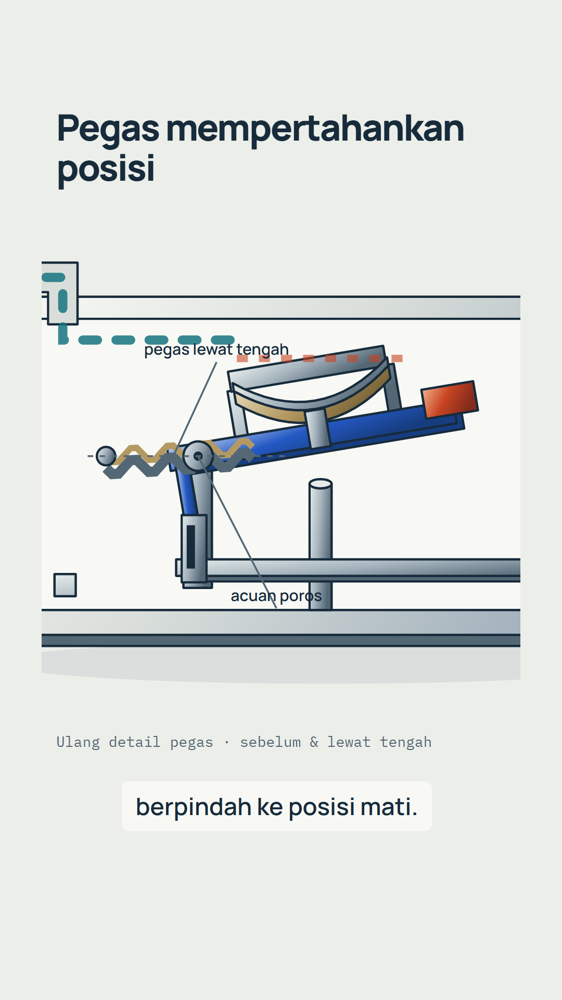
Pegas kemudian membantu tuas berpindah ke posisi mati. Perhatikan batang penghubung yang ikut bergeser.
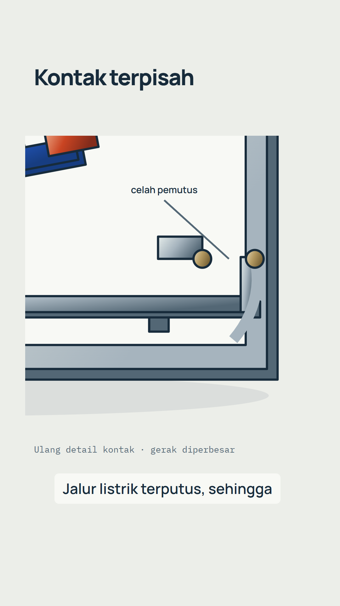
Batang ini memisahkan kontak. Jalur listrik terputus, sehingga pasokan energi ke elemen berhenti.
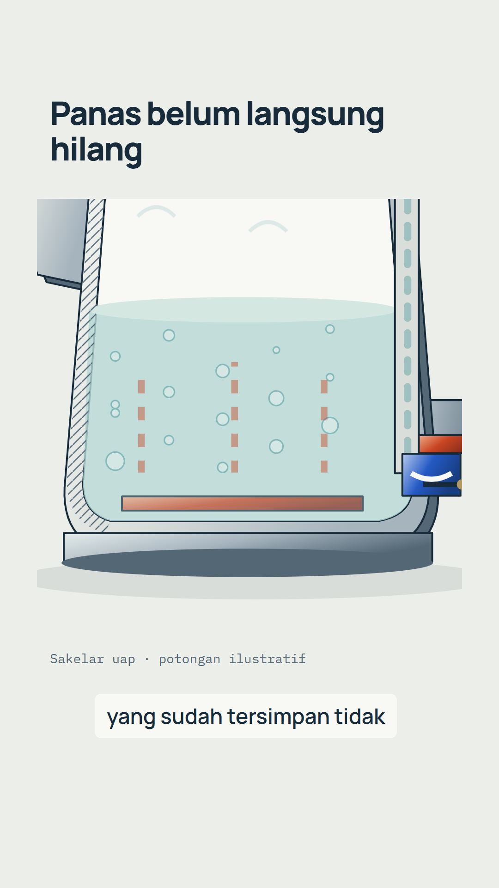
Pemanasnya mati, tetapi panas yang sudah tersimpan tidak langsung hilang. Gelembung mereda setelahnya.
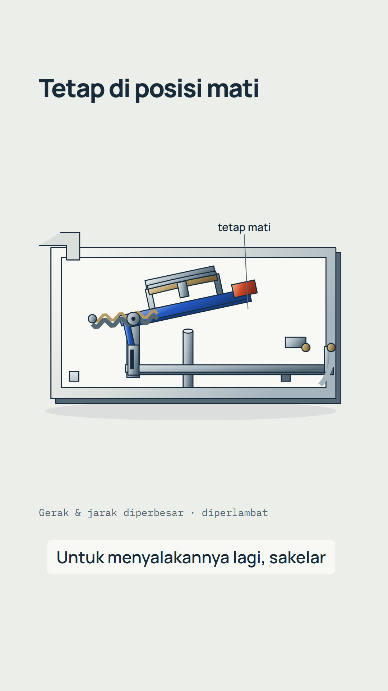
Mekanisme tetap di posisi mati. Untuk menyalakannya lagi, sakelar perlu ditekan kembali.
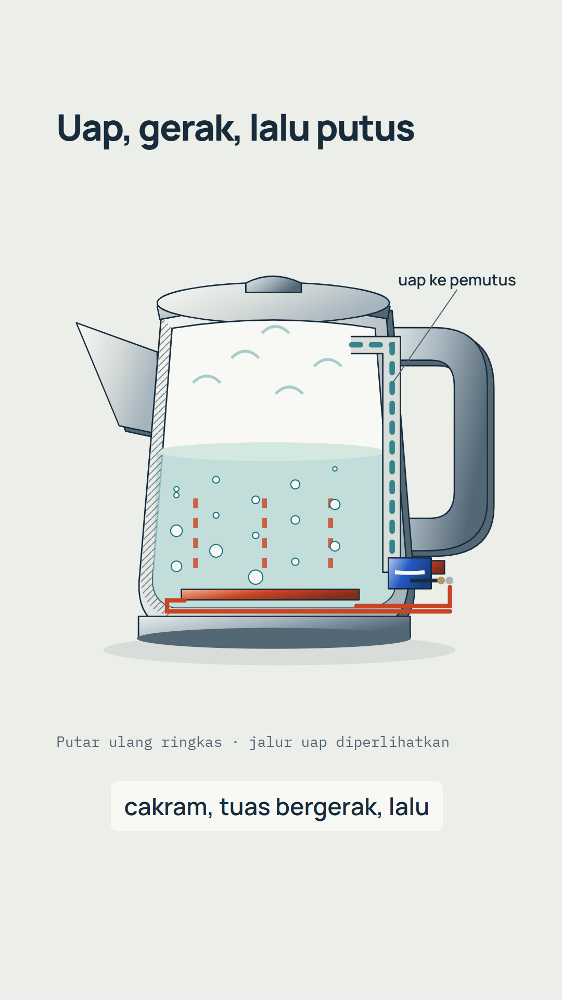
Jadi, pada ketel ini: air mendidih, uap memanaskan cakram, tuas bergerak, lalu kontak terputus. Itulah sebabnya ketel mati sendiri.